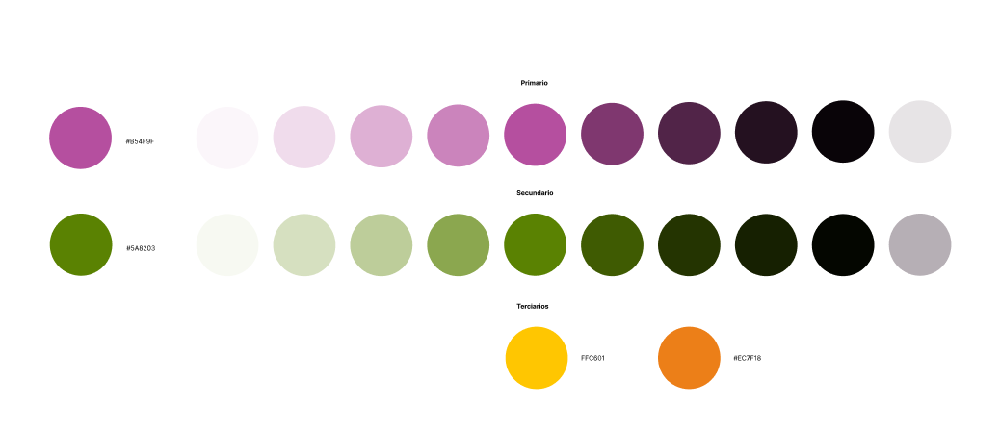
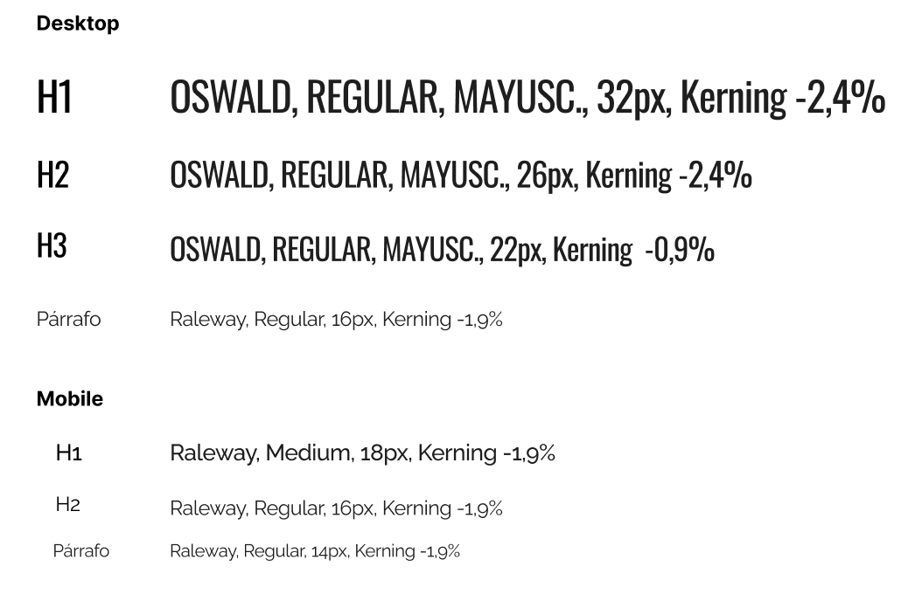
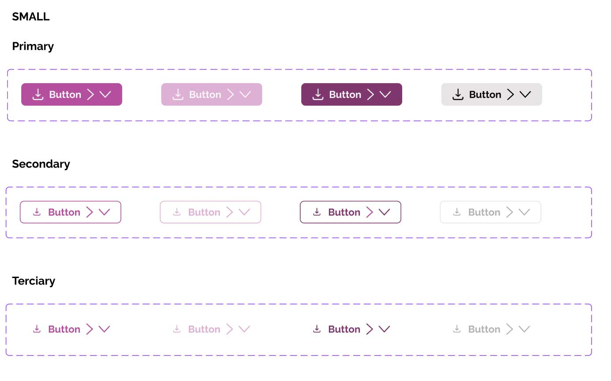
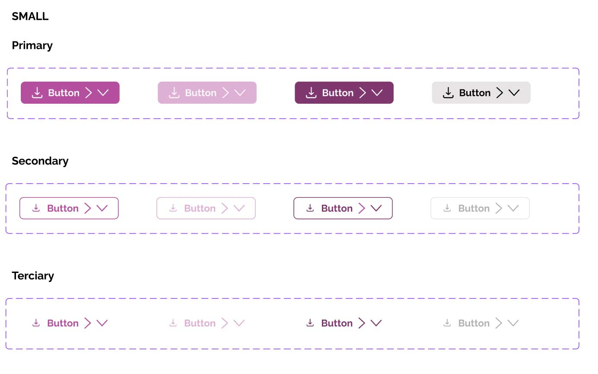
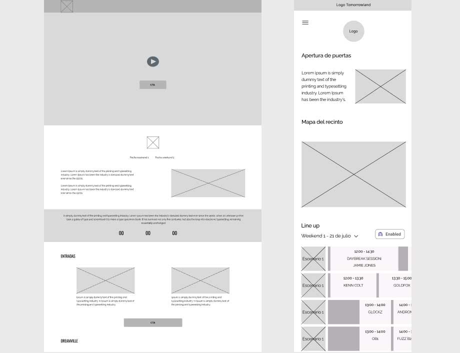
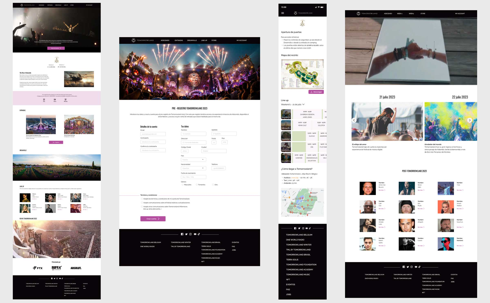

Event Microsite
Tomorrowland
Tipo de proyecto: grupal (3 miembros)
Herramientas utilizadas
Todo el proceso de este proyecto se basó en las fases del Design Thinking, que son 5: Empatizar, Definir, Idear, Prototipar y Testear.
Se pusieron en practica herramientas que pertenecen a las diferentes fases como son las siguientes:
- -Desk Research
- -Entrevistas y encuestas
- -Benchmark
- -Lean Survey Canvas
- -Análisis Heurístico
- -Definición de user persona
- -Crazy 8
- -User flow
- -Definir los valores de la marca
- -Análisis de la app del festival + web
- -ETC.
Objetivo del proyecto
Elegir un evento y diseñar un sitio web teniendo en cuenta las diferentes fases que tiene un evento, es decir, el antes, el durante y el después. También se rediseño del evento, se aplicaron nuevos colores y tipografías.
El evento elegido ha sido el festival Tomorrowland, ya que nos parecía un evento interesante sobre el que trabajar y poder descifrar qué es lo más importante para el usuario en cada una de las fases del evento.
Contexto del proyecto
Tomorrowland es un festival de música electrónica de baile celebrado anualmente en la localidad de Boom (Bélgica). El festival es organizado por las empresas propias del festival (We Are One World y Tomorrowland Foundation) en conjunción con la promotora estadounidense LiveStyle, y se calcula que anualmente acuden más de 400.000 personas de casi 200 nacionalidades distintas. Es oficialmente el festival más grande del planeta.
Research
Nuestra investigación se centró tanto en usuarios que habían acudido a Tomorrowland como en usuarios que suelen acudir a festivales. De esta manera íbamos a obtener datos generales de qué es lo más importante para un usuario en un festival.
Así como, analizar los principales competidores directos para qué tipo de información ofrecen a los usuarios y cómo.
El problema
Después de analizar los datos obtenidos de las encuestas y entrevistas, pudimos sacar las siguientes conclusiones:
- -El 81,6% de jóvenes entre 25-35 años acuden a festivales
- -Un 38,8% acude por el Line Up del festival
- -Durante el festival, lo que más le interesa es el horario
- -Después del festival quiere ver un aftermovie del festival
Una vez que conocemos qué información es importante para el usuario pasamos a cómo estructurar toda la información que debemos mostrar al usuario en los diferentes momentos del evento.
El problema es que, en este tipo de festivales existe una cantidad abrumadora de información. Muchas veces el usuario no sabe dónde encontrarla o cómo acceder a ella fácilmente.
Definición
Usuario
Una vez analizados todos los datos recabados en las encuestas y entrevistas hemos definido nuestro user persona.

A Jorge le gusta ir a festivales porque disfruta de la música y la experiencia que vive en ellos. Para él es importante encontrar la información que necesita del festival de una manera sencilla, sin tener que estar navegando por diferentes páginas.
Dispositivo
En este punto del proyecto decidimos realizar versión Desktop para los estados de antes y después y versión mobile para el durante, porque así, el usuario puede consultar la página del evento más cómodamente desde su teléfono.
Solución - Propuesta de valor
Para el antes y durante: darle al usuario la información que necesita de una manera sencilla, que sea accesible y se pueda localizar rápidamente.
Para el después: información de interés para el usuario. Esta información la hemos sacado de los datos obtenidos en las entrevistas y encuestas.
Rediseño
En cuanto al rediseño de la marca se establecieron nuevos colores y tipografías
Colores
Tipografía
Botones
 

Ahora pasamos al User Flow de Jorge, nuestro user persona, en cada uno de los estados del festival.

Ya es hora de empezar a prototipar. Empezamos con wireframes para ir estructurando toda la información que tenía que aparecer en nuestras pantallas.
Definida la estructura de la información que tiene que aparecer en cada uno de los estados del festival. Dimos el salto a Hi-fi.
Aquí podemos, de izquierda a derecha, los diferentes estados del festival. Empezamos con la web de antes del festival donde se le da información al usuario sobre la temática del festival de ese año, se le invita a pre registrarse para vivir la experiencia inmersiva que ofrece el festival, así como, de los dj de los que podrá disfrutar en dicha experiencia. Seguidamente está la página de pre registro, donde introduciendo sus datos, el usuario ya creará su cuenta y podrá acceder a la experiencia inmersiva y a la venta de entradas antes de que salga a la venta nivel mundial.
La siguiente pantalla corresponde a la versión mobile, el durante del festival. En ella el usuario ve información sobre la apertura de puertas, un mapa del recinto, el line up con los diferentes escenarios y por último cómo llegar a Tomorrowland en el caso de estar alojado fuera del recinto del festival.
La última pantalla es el post festival, destaca el vídeo del after movie del festival, además de poder ver fotos y vídeos de los diferentes días. También se incluye entrevistas a los dj que han participado en esta edición.